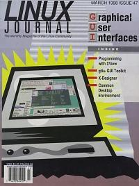

Shutdown Archive web server
Search:
Linux Journal
Issue #47/March 1998

Features
Programming with XView
by Michael Hall
This article gives you a high-level introduction to programming with XView, a GUI toolkit that complements the OpenLook interface.
CDE Infrastructure
by George Kraft IV
The programming infrastructure, no its productivity tools, is a major strength of the Common Desktop Environment. This article discusses the APIs and desktop services that are benefitting developers and independent software vendors.
AfterStep 1.3.1
by Guylhem Aznar
Mr. Aznar tells us all about the developers' plans for a friendly window manager called AfterStep.
Introducing TkDesk
by John Blair
Don't want to give up your Macintosh or Window desktop for Linux—with TkDesk you don't have to.
An Introduction to the GIMP Tool Kit
by Otto Hammersmith
The purpose of this article is to give a short overview of what gtk+ is, what it can do and where to gather more information.
News & Articles
Linux Network Programming, Part 2: Creating Daemon Processes
by Ivan Griffin and John Nelson
In part 2 of our series we learn how to design and code network daemons to serve our clients well.
The SANE Scanner Interface
by David Mosberger
SANE makes it easy to support a wide variety of devices and of applications with a minimum amount of programming effort.
GPIB: Cool, It Works With Linux!
by Timotej Ecimovic
GPIB is a standard bus used in laboratory and industry data acquisition and experimental control that is now available for Linux.
Getting Rid of Spam
by Brandon M. Browning
Blackmail
qvplay and the Casio QV-10 Camera
by Bob Hepple
Linux software to control the Casio AV-10 camera is now available. Mr. Hepple tells us how to use qvplay.
Reviews
X-Designer
by Timotej Ecimovic
Accelerated X Laptop Display Server v4.1
by Michael Scott Shappe
SGML CD: A Complete SGML Toolkit
by Terry Dawson
WWWsmith
ISDN and Linux—Surfing at Warp Speed
by Mark Buckaway
This article presents a detailed tutorial on setting up an ISDN link to the Internet with Linux.
Columns
Letters to the Editor
Stop the Presses
Linus Wins the Nokia Award
by Phil Hughes
Take Command
Ghostscript
by Robert A. Kiesling
Ghostscript Need to preview and print PostScript Files? Here's a utility that will do just that.
Linux Means Business
Colleges Using Linux
by Don Kuenz
Colleges Using Linux Here are the details of how Casper College uses Linux in an academic setting.
New Products
System Administration
Automated Mail Purging for SMTP Mail
by Michael S. Keller
Automated Mail Purging for SMTP Mail Mr. Keller gives us three scripts for cleaning out old mail files automatically.
Kernel Korner
Networking with the Printer Port
by Alessandro Rubini
Linux Gazette
Writing HTML with m4
by Bob Hepple
Writing HTML with m4 Ease your creation and maintenance of web pages using this handy pre-processor called m4.
Best of Technical Support
Archive Index
Shutdown Archive web server
Search:
Copyright © 1994 - 2018
Linux Journal
. All rights reserved.